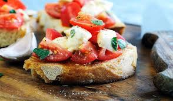
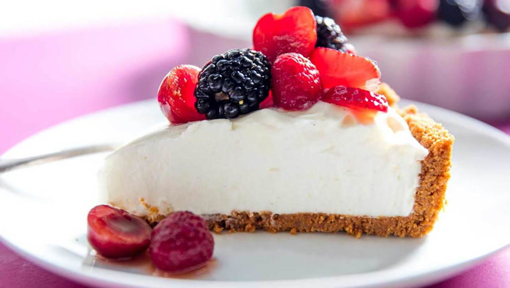

Entradas
-

Brushetta Tradicional - €80
Pan tostado, tomate, albaca y aceite de oliva extra virgen
Platos Fuertes
| Platillo | Descripción | Precio |
|---|---|---|
| Risotto de Hongos | Arroz cremoso con setas y queso parmesano. | €180 |
| Filete Mignon | Filete de res a la parrilla con salsa de vino tinto. | €240 |
| Platillo Estrella | Camarones al ajillo con puré de papa trufado | €220 |
Postres
-
Tiramisú Clásico
€70 -

Cheesecake
€80